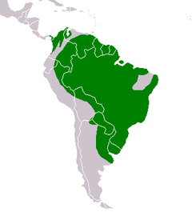
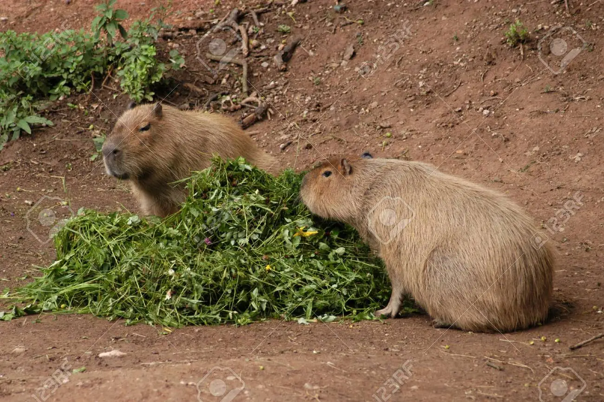
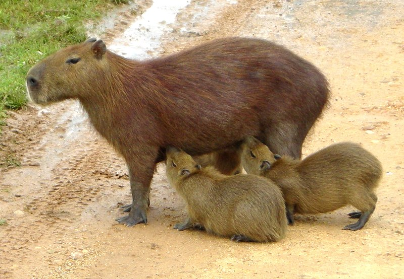

Detalles de los Capibaras
Hábitat
Pueden vivir en diferentes tipos de hábitat, pero muestran preferencia por algunos en concreto. Suelen encontrarse cerca de lagos, ríos, marismas o manglares.8También necesitan un suelo firme para dormir, idealmente con una vegetación espesa que les sirve de protección. Para alimentarse no tienen problema en adentrarse por la sabana y herbazales. La mayor densidad de población de capibaras se encuentra en las extensas zonas húmedas de Sudamérica, como el Pantanal, o la región de los Llanos del norte del continente, bañada por el río Orinoco. Viven mayoritariamente en las llanuras, pero también habitan en altitudes de hasta 1300 metros por sobre el nivel del mar. En comparación con otras especies animales de Sudamérica, las capibaras toleran bastante bien los cambios de hábitat provocados por la actividad humana, y también pueden sobrevivir en zonas transformadas en plantaciones o pastos.
Algunos paices en donde se pueden encontrar
Alimentacion
La dieta se compone principalmente de hierba terrestre y la complementa de vez en cuando con plantas acuáticas. A veces entran en plantaciones y se alimentan, por ejemplo, de cañas de azúcar, sandías o maíz. La creencia extendida de que los peces también forman parte de la dieta de las capibaras es falsa. Tienen un aparato digestivo extremadamente eficiente que les permite subsistir con una dieta el 75 % de la cual se compone de solo entre cuatro y seis especies de plantas,16 y después dejan de comerlas durante un tiempo, permitiendo que las plantas de estas especies se recuperen antes de volver a comérselas
Reproducción
El macho es quien toma la iniciativa en la copulación, ya que es él, el que persigue la hembra, primero por tierra y después dentro del agua. El apareamiento tiene lugar en aguas poco profundas, después de entre seis y ocho rápidos empujes, el acto sexual llega a su fin. El coito se puede repetir después de un rato, hasta veinte veces o bien con la misma pareja o con parejas diferentes. El aparejamiento puede tener lugar en cualquier época del año, pero la mayoría de nacimientos suelen ser en la estación lluviosa (de abril a mayo en el norte de Sudamérica y en octubre al sur del continente). Generalmente, cada hembra pare una vez por año, pero si las condiciones climáticas son favorables pueden hacerlo dos veces. El periodo de gestación dura unos 110 días en la subespecie septentrional y unos 150 en la meridional. Las capibaras son multíparas, y cada parto se compone de una media de cuatro crías, pero puede variar entre dos y ocho.19 Las hembras tienen diez mugrones que están colocados por parejas en el vientre.
Estado de Conserbación
Muchos de los hábitats adecuados para esta especie se encuentran en regiones muy utilizadas para el pastoreo. Como los humanos preparan fuentes de agua para sus animales, minimizan la cantidad de carnívoros por medio de la caza y como los bovinos mantienen la hierba corta, en muchas zonas se ha producido un aumento de su población. Censos de los latifundios bovinos de la región de los Llanos revelaron una densidad de Hydrochoerus hydrochaeris de entre 50 y 300 /km². Los propietarios de terrenos de pastoreo los persiguen, especialmente durante la estación seca, ya que consideran que las capibaras arrasan con la comida de sus animales. Sin embargo muchas personas consideran que es cruel la matanza de dicho animal por parte de estos latifundistas, ya que se hace a garrotazos, disparos o con perros de caza.
En Brasil principalmente, existen personas que creen que es bueno cazarlas por los daños que supuestamente ocasionan en los cultivos industriales; tales como el de la soja y el mijo, y especialmente en las plantaciones de arroz, en donde podrían causar una devastación considerable. En dichos sitios se les considera como a una plaga
En las regiones en que son cazados en cantidades comerciales, como por ejemplo en las regiones de la frontera colombo-venezolana, ya son raros sus avistajes por parte de los locales.[cita requerida] En otras naciones, como en Perú, su número se ha reducido drásticamente o han desaparecido como consecuencia de su consumo voraz o la desaparición de su hábitat.[cita requerida] Aunque, en general son abundantes y tienen en una amplia distribución en otras regiones del continente suramericano, no se los considera una especia amenazada por tal motivo.
Contextura de una Capibara Adulta
| Desde | Hasta | |
|---|---|---|
| Longitud | 1 m | 1.30 m |
| Altura | 50 cm | 60 cm |
| Peso | 35 kg | 66 kg |